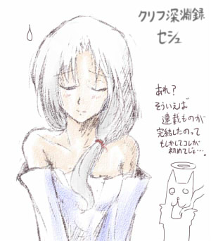

■2012-06-10 (日) 片道勇者30[RPG]+ｸﾘﾌ▼
今週ももちろん地味なデータ部分の開発を続けていました。
【クリフ深淵録 ついに完結！】
クリフ深淵録の最終話がリリースされました！
これまで４話に渡って続いたクリフ深淵録の物語も、
ようやくこれで完結を迎えます。

ウディタの試作品として開発した『クリフ迷宮録』より始まった
このノベル企画、もし遊ぶ機会がございましたら、
いつか遊んでくださると幸いです。
【クリフ深淵録 公式ページ】
にしても、まさか（迷宮録時には）絶対完成しないと思ってた方が
先に終わるとは思いませんでした。
一方で、自分が完成を期待してなかったものでも
終わりまで作れるんだなということも分かりました。
シル見もそのうち完結させて、スッキリさせたいところです。
シル見を今作り直せば、以前よりは綺麗に作れるでしょうけれど、
いい意味でのトガった具合が失われていそうな気がします。
それとも「アホやっていいよー」って感じなら、これまで
溜まってたアホ成分が解放されて濁流のようになるのかもしれません。
どんなものも、作ってみないと分かりませんし、
同時に全ての期待に添えられるとも思いませんけれど、
それでもやっぱり、ちょっと挑戦してみたいんですね。
【『片道勇者』 今回の進行状況】
・次元倉庫の仕様変更 → 実装してすぐにアレですが、次元倉庫の 仕様をよりスリリングに変更しました。 ・取り出すのは自由（リセットすればアイテムは一回前に戻る） ・ただしゲーム終了時に預ける場合、出したアイテムは無くなっている ・何も預けないなら前の倉庫の状態を保持できる。 まあ結論としては、普通の倉庫っぽくなってるけど、 使ったアイテムを無くしたことにしたくなければ 前の倉庫の中身を維持できるよ、という感じです。 最強武器を取り出して消耗させたときに凄いレアアイテムが 出たりすると、ジレンマに苦しむ感じになりますね。 （最強武器を消耗させてでも倉庫にレアアイテムを入れるか、 それともレアアイテムを諦めて最強武器を維持するか悩める） ・やさしいモード、シナリオ作成 → 本当にシンプルですが、やさしいモードにシナリオを付けました。 特定距離に到達すると魔王が出現し、倒すとクリアになる 単純なシナリオです。倒しきらずにお手玉すると無限に進めます。 ・各種調整 → エンディングに入る演出を調整 → やさしいモード専用のエンディングを作成 → 新しい「地形」を実装。敵が強い場所です。 片道勇者では、数十kmごとに地形が変化し、 村やダンジョン・敵の出現率や種類が変化します。 |
まだまだストーリーやアイテム、敵の実装・調整、
データ的なオモシロ要素の導入など細かいところがたくさん残ってます。
思いついた面白そうな要素は一通り全部投入して、完成としたいですね。
以下は拍手返信です。
皆さまの拍手コメント、いつも本当にありがとうございます。
＞ところで、絵が公開されるまで「妖精」ってテストの妖精だと
＞思っていたのに少し裏切られた気分でした。 .
ああ、それは残念！
ちなみに、個人的にはマスコットはリス君の方が使いやすい派ですね。
＞どうぞCivilizationシリーズをお楽しみください
＞ BY Sid Meier (うそです) さん .
いやーシドさんさすがですねぇヘッヘッヘ、って本当に思います、ええ。
Civ5がある程度分かってくると、
今度はスパイやら何やらオモシロそうな要素が
満載されてるCiv4の方も気になってきてしまいますね。
＞そういえば、名前は「片道勇者」で決定なんですか？ .
＞他のタイトルと比べると地味というか、名前だけだと .
＞スルーしてしまいそうな感じがします。（スクショ次第かな？） .
＞このサイトを知ってれば内容が濃そうなのはわかりますが…。
よし！ ではここで某作をリスペクトして
タイトルを『片道勇者勇者』に……。
なんてのは冗談ですが、たまには地味でいいかなとも思ってます。
なにより覚えやすいのが一番大事ですからね！
＞倉庫とか使って周回プレイで強化していけるのはいいけど、
＞倉庫使用不可とかの高難易度バージョンもあると嬉しいです。
「すごく難しい」のモードだと倉庫使用不可にしてもいいですね。
何にせよ、「使わずにクリアすると評価アップ」したり
「プレイ中に表示されるプレイヤーリストで無倉庫マークが付く」など、
挑戦に応えられる何かしらの要素は入れようと思ってます。
2012-06-10 (日)  カテゴリ: 片道勇者
カテゴリ: 片道勇者
 カテゴリ: 片道勇者
カテゴリ: 片道勇者